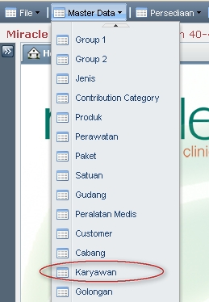
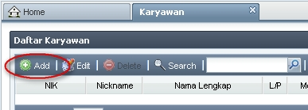
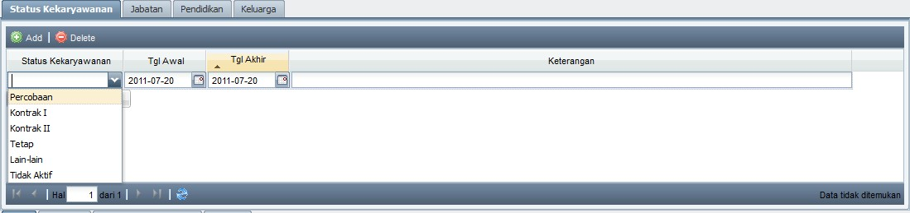
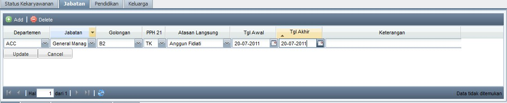
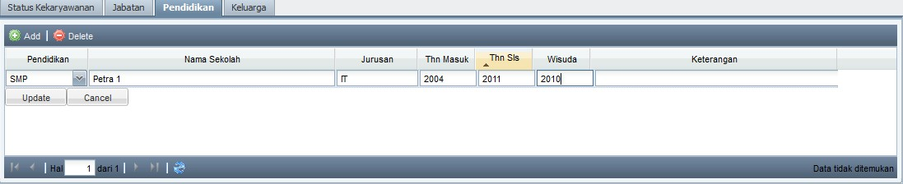
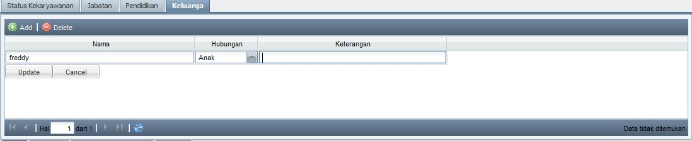

Tambah Appointment
Tambah Appointment Baru
- Klik Add untuk menambah Appoinment baru

- Jika customer sudah terdaftar, langsung cari nama di kolom Customer.
(tips: untuk memilih Customer, dapat dengan mengetikkan No, Nama, Telp Rumah, Telp Kantor dan HP Customer)

- Jika customer belum pernah terdaftar (customer baru), centang "Customer Baru". Isikan Nama Customer dan HP (wajib). Isikan Telp Rumah dan Keterangan jika diperlukan (tidak wajib).
(Note:
- pada saat Customer Baru datang, CRO wajib melengkapi data customer (bukan membuat baru) yang sudah diinputkan di Master Data Customer.
- cara melengkapi data customer dapat dilihat di bagian lain MIS User Manual ini, yaitu Customer --> Ubah Customer, atau klik disini)
- Klik tab yang sesuai (Detail Perawatan Medis atau Detail Perawatan Non Medis), lalu klik Add untuk menambahkan perawatan yang diinginkan.
- cari Perawatan yg diinginkan
(tips: untuk memilih Perawatan, dapat dengan mengetikkan Kode atau Nama Perawatan)
- masukkan Tgl Appointment, Jam Appointment, Dokter / Therapist yg diinginkan.
- klik Update setiap kali selesai menambahkan 1 detail Perawatan
- klik Add untuk menambahkan detail Perawatan kembali
- Klik Save and Close untuk menyimpan Appointment.
- Akan muncul Informasi "Data Appointment berhasil disimpan" jika penambahan Appointment berhasil.
Note:
- Jika Customer melakukan appointment untuk perawatan lebih dari 1, maka untuk menambahkan perawatannya lainnya adalah cukup dengan klik baris appointment customer pada Daftar Appointment yang telah dibuat sebelumnya, lalu klik Edit.

Klik Add pada Detail Perawatan yang diinginkan. Klik Update & Save and Close jika perawatan sudah selesai ditambahkan.

Tambahan Informasi Penting di Detail Perawatan Non Medis:
- Checkbox App:
Centang checkbox App, jika Customer minta untuk ditindaki oleh Therapist tertentu.

di Daftar Appointment, Therapist yg tercentang App-nya, akan terlihat berwarna merah.

Copyright © 2010, IT Department of Miracle Aesthetic Clinic Group
Created with the Freeware Edition of HelpNDoc: Free help authoring environment